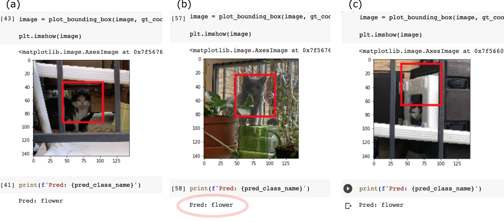

The code was a little more invovled, following
Warden & Situnayake's TinyML and a
free online course on object
localization ,
I chose to use Google Colab (partially for its GPU storage, partially for easy sharing with my friends).
➱ The first version of the code (v1.0) is trained on many images of our backyard cats' faces, in various
positions,
in order to achieve object localization: detect where the cat face is. In addition to that, it predicts the
"label",
or the cat's name (eg: "starAnise", "flower").
➱ We then take these pre-trained weights and model, and apply it to new pictures.
➱ This allows us to input a cat's picture (hopefully recently taken), and for the machine to output: 1.
name of cat (label), 2. position of cat.
Future versions (v2.0) would involve implementing something like YOLO (or, tiny YOLO), and a live video-stream of
the cats.

➱ As you can see here, the preliminary training results are a bit mixed. For the more general cat Flower
(black and white),
and with a picture that clearly shows the face, as seen in (a), the model does not too bad.
However, just swapping in other cats, such as Star Anise (grey),
you can see that the model automatically classifies her as Flower -- shown in (b).
Not only that, but if the picture isn't a good face picture, as shown in (c),
the model has a really hard time finding any sort of "face".
This just means that we need better training: more images of different cats and a more robust model.